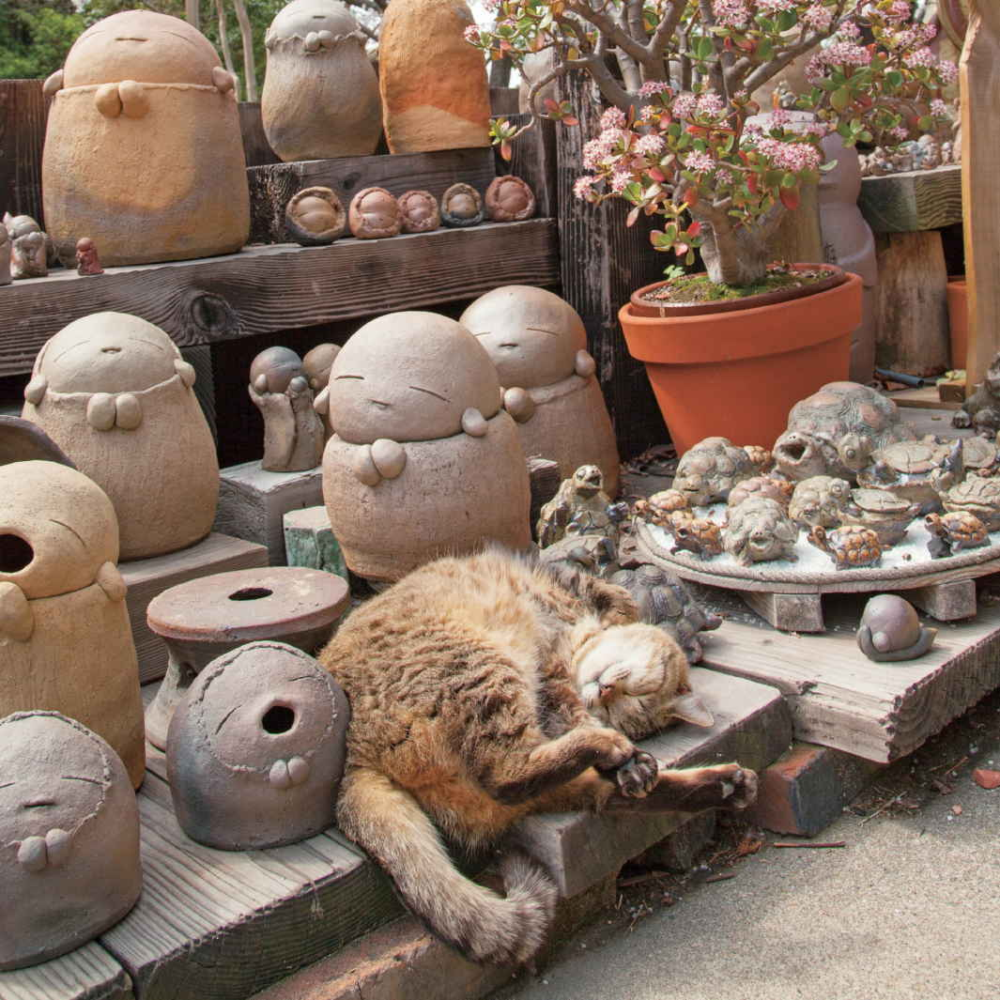

| あなたはゼッタイ大丈夫―――愛されネコが知っているHAPPYにゃルール | |
| 植西聰 | |
| 株式会社あさ出版 (2017) | |
本書は縦書きでレイアウトされています。
また、ご覧になるリーディングシステムにより、表示の差が認められることがあります。
Ｃｏｎｔｅｎｔｓ
ＰＡＲＴ１
自分に自信が欲しいとき
ＰＡＲＴ２
前向きな気持ちになりたいとき
ＰＡＲＴ３
まわりの人といい関係を築きたいとき
ＰＡＲＴ４
心をプラスのパワーでいっぱいにしたいとき
ＰＡＲＴ５
夢をかなえたいとき
ＰＡＲＴ６
もっと幸せになりたいとき
欠点だらけの自分も、
失敗ばかりの自分も、
許してあげましょう。
許すことが自分を愛することにつながります。
「わたしってなかなか魅力的な人間だと思うの。欠点がないわけじゃないけど、生い立ちや環境も含めてわたしがわたしでよかったって思う」
みんなから「ステキ」と言われる人は、心の底から自分のいいところを認めています。
一方、自分のことが嫌いな人は、どんなにいいことがあっても「どうせまたすぐイヤなことが起きる」と考えます。
自分のいいところを評価する。
これは毎日を楽しく過ごすために最も大切なことです。
今日から自分を好きになる訓練をしましょう。
自分のいいところを書き出して、口に出して読みあげましょう。
自分のことをほめて励ましましょう。
「わたしってなんだかんだ言ってもよくやっているじゃない」
そう思えるようになったら、幸せな毎日はもう、すぐそこにあります。
自分の好きなこと、
嫌いなことに敏感になりましょう。
好きなことを増やし、
嫌いなことを減らす。
それだけで人生は楽しくなります。
毎日を楽しい気分で過ごすために大切なのは、「どうなったら自分は楽しいのか」を考えることです。
「こうなったら、わたしはとっても幸せだな」
そう思える何かを見つけましょう。
何をしているときが自分は楽しいのか、どういう状態を自分は幸せだと思うのかがわかれば、そうなるためにどうしたらよいかを考えることができます。
どうしたらよいかがわかったら、どんどん行動に移しましょう。自動的に心は明るく晴れていきます。
楽しい、うれしい、幸せという気持ちを感じるシチュエーションは人によって全然違います。
アイスクリームを食べているときが最高に幸せという人もいれば、部屋で静かに音楽を聴いているときがいちばん楽しいという人もいます。
ペットに触れるのが生きがいという人もいます。
人に迷惑さえかけなければ、どんなことでもかまいません。
「どういうときに自分の心が明るくなるのか」
「自分の好きなことは何か」
「自分の嫌いなことは何か」
それを知っていると人生はより過ごしやすくなります。
「わたしにはムリ」なんて、
決めつけないで。
できないことなどないのですから。
「わたしはいつも失敗ばかり。どうせ、わたしにはなんの能力もないんだ」
と、自分を卑下している人は、自分で可能性を狭めています。
しかし、人生は、思いどおりに変えられます。
何かを望みながらも、それがかなわないのは、自分でムリだと決めつけているからです。
「ムリだと思えばムリになる。成功を信じれば成功する」
これが、成功のセオリーです。
すべてのことは可能なのだと、今日から自分に言い聞かせてください。
もし、一瞬でも「ムリかも」という考えが浮かんだら、すぐに、「今のは間違い。ちょっと心が迷っただけ。大丈夫、本当はうまくいくんだから」と、訂正するのです。
心が成功を信じられるようになったら、あきらめてしまっていた人生も、軌道を修正していくでしょう。
大切な親友に接するように、
自分とつきあいましょう。
自分をおろそかにする人が、
幸運の神様から愛されることはありません。
親友が泣いていたら
「大丈夫だよ」
「次はきっとうまくいくよ」
と慰めてあげるのに、
自分が泣いていると慰めるどころか、
「だからダメって言ったじゃない」
「どうしてあなたはいつもそうなの？」
と責めてしまうのはなぜでしょう。
わたしたちは、自分に対し、つい厳しい態度をとってしまいがちです。
でも、幸せになりたければ、自分がいちばんの味方になってあげる必要があります。
自分のことを大切にしない人間は、心のなかにマイナスのエネルギーがたまってしまうのです。
大切な親友に接するように、自分に対してやさしくしてあげましょう。
「あなたならできるよ」
「今度は必ず幸せになれるよ」
そうやって、自分を本気で応援できる人に、幸運の神様はほほ笑むのです。
チャンスがめぐってきたら、
堂々と受け入れましょう。
誰にでも幸せを受け取る資格があるのです。
「自分を好きになれない」「なぜかいつも幸せになれない」といった幸せ恐怖症になっている人がいます。
せっかくチャンスがめぐってきたのに、「やっぱりわたしにはムリ」「自分にはできない」と言って、その機会をダメにしてしまったことはありませんか？
幸せ恐怖症の人は、本当は求めていた幸せが、いざ手に入りそうになると、そこから逃げ出してしまいます。
本心では幸せや充実感を求めているのに、臆病な心が邪魔をして、いつも「今のまま」の状況でいることを選んでしまうのです。
でも、次にチャンスがめぐってきたら思い切って受け取りましょう。
怖くても、勇気を出して飛び込みましょう。
誰にでも、幸せを受け取る権利があります。
思い切って幸せをキャッチしたとき、自分を少し好きになっているかもしれません。
今の自分を否定したり、
嫌いになったりする必要はありません。
今の自分が理想と違うのは当たり前です。
今は、成長の途中なのです。
自分の欠点を並べ立て、自分が理想とする姿とかけ離れていたとしても、それを悲しむことはありません。
今はまだ、理想に向かって進んでいる最中なのです。
「全然、進歩なんてしていない」という人は、少し前の自分を振り返ってみてください。
去年の自分と今の自分とは、まったく同じではないはずです。
もしかしたら、去年より後退したように感じるところもあるかもしれません。
でも、それは前に進んでいる証拠です。
１歩踏み出すことができているからこそ、いろいろなことが起きるのです。
停滞していれば成功も失敗もしませんが、成長する過程ではいろいろなことが起こります。
ときにはマイナスの出来事が続くこともあるでしょう。
しかし、目標をもって努力していれば、自然とよい方向に道は開かれていきます。
ですから、あせる必要はないのです。
今、この瞬間も、さっきより少し、成長していることは間違いないのです。
自信がないのなら、
つくってしまえばいいのです。
自信は誰でも簡単に身につけることができます。
自信をもつ。
そう決めたときから、
人生は明るくなるはずです。
自信があるとは、読んで字のごとく、「自分」を「信じる」ということです。
では、どうしたら自信をもてるのでしょう。
まず、「わたしなら大丈夫」「きっとできる」と自分への信頼感をもつことです。
そのためには実際に、「わたしなら大丈夫」「きっとできる」という事実を、自分に見せてあげなくてはなりません。
「それができないから、自信がもてないんだけど」
そう思う人は、成功体験を積み重ねることをおすすめします。
成功体験といっても、いきなり大きなことをやり遂げなければならないわけではありません。
小さなことでも、自分が「これをやる」と決めたことを実行して、成功できれば十分です。
「寝る前に、今日１日を振り返って、やり残したことがないか点検する」
「明日は、朝６時に起きて、ウォーキングをする」
「今日会う人とは、笑顔であいさつする」
自分にプラスになると思えることなら、なんでもいいのです。
「自分で決める→ 実行する→ 結果を確認する」
これが、自信を得るための方程式です。
自分に期待をかけて、自分を信じて行動すれば、信じただけの結果が必ず出ます。
「やればできる」という実感は、次の行動への原動力となります。
そして、自信がつけばつくほど、自分の可能性が広がっていくのを感じるでしょう。
１日の終わりに、
がんばった自分をほめてあげましょう。
誰もほめてくれなくても、
自分だけは努力を認めてあげましょう。
自分をほめてあげたことがありますか？
「他人をほめることはあるけど、自分のことはないなあ」という人も多いでしょう。
そんな人は、今日から自分をほめる習慣をもつようにすることです。
眠る前に１日を振り返り、その日の自分をほめてあげるのです。
ほめるべきことは、探せばいくらでもあるはずです。
「嫌いな上司にイヤミを言われたのに、笑顔で対応できたのはすごい進歩だ。えらいぞ、わたし」
「今日の会議での発言は、なかなかよかったよ」
など、内容はささいなことでいいのです。
自分をほめることは、自分を肯定することにもつながります。
誰にも遠慮する必要はありません。
がんばっている自分をほめ続けるうちに、自分の本当の価値に気づくことができます。
トラブルがあったらラッキー。
すべてのトラブルは、
神様からのメッセージです。
すべてのトラブルには、意味があります。
無意味なことなど、ひとつもありません。
すべてのことは、神様からのメッセージ。
神様は、もっとよくなってほしくて、トラブルという形で知らせてくれるのです。
こんなふうに考えましょう。
・上司に叱られた→ 自分の改善点を教えてくれた。ありがたい。
・仕事でミスをしてしまった→ 注意不足がわかってよかった。
・言葉で人を傷つけてしまった→ その言葉を２度と使ってはいけないと学べた。
すべての出来事は、自分をよい方向に導いてくれる、ラッキーな現象だと思えたら、どんなことにでも対処できるようになります。
トラブルを恐れず、発想を転換すれば、そこで、マイナスの出来事はストップします。
と同時に、人生がプラスに転じるきっかけが生まれます。
それが、「トラブルがあったらラッキー」の意味なのです。
もし今、苦しいのだとしたら、
それは、
上り坂の途中だからです。
坂の上には素晴らしい充実感が待っています。
「どうしてわたしだけつらい思いをするの？」
「毎日イヤなことばかり。貧乏くじを引かされているみたい......」
そんなふうに感じているなら、それは今、坂を上っている途中だからです。
片づかない仕事は、確実に自分のスキルを向上させています。
気まぐれな上司の機嫌をとることは、自分の人間性を鍛えているのです。
恋人との関係がうまくいっていない人は、２人の関係が次のステップに進むための、準備段階に入っているのかもしれません。
苦労には、必ず意味があります。
決して世間を呪ったり、自己嫌悪に陥って、自分を責めたりしないようにすることです。
坂を上りきったとき、そこから見える景色の美しさに感激し、充実感を覚えるでしょう。
まずは、
自分を幸せにしてあげましょう。
自分を幸せにできたときに、
他人を幸せにすることができるのです。
自分が、自分を幸せにしてあげる。
なんだか不思議な言い方ですが、これはとても大切なことです。
なぜなら、自分が自分自身のことをいちばんよく知っているのですから。
人は、うまくいかないことがあると、つい、他人のせいにしてしまったり、八つ当たりしてしまったりします。
大切な恋人に、「なんで、わたしの気持ちをわかってくれないの」と腹を立てることもあるでしょう。
でも、ちょっと待ってください。
それは、誰かに解決してもらうことでしょうか。
自分にしか解決できないことではないですか。
相手に明確な原因があるなら別ですが、ただ、なんとなくむしゃくしゃするというときは、要注意です。
そんなときは、他人になんとかしてもらおうとせず、自分で自分を幸せにしてあげましょう。
久しぶりに、親友を誘って旅行に行く。
前から行ってみたかったレストランで、おいしい料理を食べる。
早めに家に帰って、お風呂に入って、ゆったりとくつろぐ。
人に幸せにしてもらうことばかり考えていると、人の幸せまで壊してしまうかもしれません。
ですから、まずは自分で自分を幸せにしてあげることが大切なのです。
自分を幸せにできる人は、他人も幸せにしてあげることができるのです。
いつも「最高の自分」でいられるわけではありません。
たまには落ち込んだっていい。
泣いたっていいのです。
少し休んだら、
またいつもの自分に戻ればいいのですから。
思いっきり涙を流すことには、ストレスを発散して、運気を呼び戻す効果があります。
「どうしてわたしは、あの人みたいにうまくやれないのだろう」と自己嫌悪に陥ったときや、どうしても自信がもてないときも、自分を卑下してはいけません。
そんなときこそ自分にやさしくしてあげましょう。
おすすめは１人で悲しい映画を観ること。
どんどん涙を流してハンカチが涙でびしょびしょになる頃には、心はスッキリと晴れやかになり、次のステップへと進んでいく準備が整っていることでしょう。
少し元気が出たら、今度は好きな音楽を聴いたり、好きな物を食べたりして、心を上向きに変えていきましょう。
いつも最高の自分でいることを強いる必要はありません。
たまに休んで、また元気になる。それでいいのです。
自分の運命に「ありがとう」と言うと、
もっと感謝したくなるようなハッピーな出来事が起こります。
自分の運命を「こんなはずじゃなかった」
と嘆いていると、
もっと嘆きたくなるような出来事が起こります。
「どうしてこんな自分に生まれてきたんだろう」
「もっと違った人生を歩みたかった」
そう言って自分の運命を嘆いている人がいます。
運命を嘆いている限り、運命から愛されることはありません。
自分の悪口を言われた相手に、愛情を注ごうと思う人はいないように、運命も、自分のことを悪く言う人を幸福にはしないのです。
反対に、何があってもよい方向に解釈する人に、運命はほほ笑みます。
「ビッグなイベントはないけれど、毎日楽しいな」
「たいへんなこともあるけど、やりがいがあるのは幸せだな」
「他人に自慢できるようなことはないけど、わたしは自分のことが好き」
運命を前向きに受け止める人に、運命の女神は力を貸してくれるのです。
最初は少し無理をしてもいいので、意識的に自分の人生への満足感を口に出してみましょう。
もし、今、不幸だとしても、それは今、この一瞬のこと。
長い目で見れば運命は楽しいものです。
不運なことがあってもそれは運命のせいではありません。
何ごとも考え方しだいなのです。
運命はもともと、前向きに考える人に味方するのです。
日々を楽しみ、味わいつくしましょう。
人は人、
自分は自分。
誰かと比べる必要はありません。
自分のペースで前に進めばいいのです。
幸せそうな友人を見て、うらやましくなったとき。
器用な同僚を見て、自分が情けなくなったとき。
そんなふうに他人と比べて落ち込んだときは、「人は人、自分は自分」、そうつぶやくことで、心の平静を呼び戻すことができます。
人にはそれぞれのペースがあります。
あせったり、悲しんだりする必要はありません。
自分のペースで進んでいけばいいのです。
ときには１歩も前に進めていないのではないかと不安になることもあるでしょう。
大丈夫です。
ちゃんと、前進しています。
何ひとつ、不安になることはないのです。
マイナスの口ぐせをやめると、
心のなかにプラスのエネルギーが満ち、
幸運がやってきます。

「わたしは何をやっても『うまくいかない』。運に見放されているみたい」
「なんだか毎日が『つまらない』。何かいいことないかなあ」
このように悩みを抱えやすい人は、「ツイてない」「ダメ」「最悪」「最低」「ムリ」といったマイナスの意味をもつ言葉を無意識のうちに使うくせがあります。
悩みを抱えやすい人は、１度、自分の口ぐせをチェックしてみるとよいでしょう。
自分の口ぐせは、案外知らないものです。
悩みごとがあると心がマイナスの感情でいっぱいになり、そのエネルギーに引きずられてネガティブになりがちです。
そんなときは意識的にプラスの言葉を使いましょう。
不思議とプラスの感情がわいてきて、本当にうまくいくような気がしてくるのです。
言葉の力は強力で、口にするだけで状況が変わります。
プラスの言葉を使い続けると、その積み重ねで心のなかのプラスのエネルギーが増え、幸運を引き寄せるのです。
「怒り」にとらわれない人になりましょう。
怒っても、イライラしても、
いいことは何ひとつありません。
「喜怒哀楽」という言葉のとおり、人間には、様々な感情が存在します。
自分が手がけた仕事が成功すればうれしくなり、失敗すればがっかりします。
そうした感情が生まれるのは、人間であれば、当たり前のことです。
でも、気をつけてほしいことがあります。
それは「怒り」の感情とのつきあい方です。
なぜなら、「怒り」は人の感情のなかで最も激しく破壊的な力を発揮するからです。
相手を傷つける行為や取り返しのつかない行動をとってしまう場合、そこには必ずと言っていいほど、「怒り」の感情があります。
そして、もうひとつ、気をつけなければならない感情があります。
「怒り」と密接な関係にある「イライラ」です。
仕事がうまくいかない。
恋人とケンカしてしまった。
テレビの番組がつまらない。
日常には、「イライラ」のもとがあふれています。
しかし、思いどおりにいかないからといって、いちいちイライラしていては、心のなかにマイナスの感情がどんどんたまっていくばかりです。
「イライラしたら、ため込まないで、怒りを表に出してしまったほうが、
スッキリするのでは？」
と思う人もいるかもしれませんが、そうとは言えません。
自分の身のまわりにいる怒りっぽい人を観察してみてください。
彼らは、何か理由があって怒っているのでしょうが、怒ったあとに、機嫌がよくなるかというとそうではありません。
すぐに別のことでイライラして、ずっと何かに怒っています。
「怒り」は、その都度、鎮めていく。
それしかありません。
怒りの感情で頭や心がいっぱいになったときは、深呼吸をして、なぜ、自分が怒っているのかを考えてみるとよいでしょう。
するとイライラがなくなり、不思議と気持ちが落ち着いていきます。
やがて「怒り」がすっかり和らぎ、心が「安らぎ」で満ちていくでしょう。
まわりにいる人たちは、
いくつもの偶然を超えて出会うことができた人たちです。
そんな彼らを無条件で受け入れましょう。
そして、
彼らの存在そのものに感謝しましょう。
世界には73 億人が存在しています。
ということは、今日新しく会った人たちは73 億分の１の確率で出会った人たちです。
自分の家族や恋人や友人、ライバルでさえも、73 億分の１の確率で出会い、今のように深くつきあうようになったのです。
これは奇跡以外の何ものでもありません。
人との出会いは、神様が与えたメッセージそのものなのです。
ですから、家族、恋人、友人、そしてこれから出会う人々を大切にしましょう。
彼らが伝えるメッセージを素直に受け入れて感謝しましょう。
どんなに苦手な人であっても、「73 億分の１の確率でこの人とわたしは出会った」という事実を考えれば、その人に愛着を感じずにはいられないはずです。
それこそ神様のはからいなのです。
気持ちに余裕がないときは、
自分の目元を意識しましょう。
やさしいまなざしは、
人を幸せにします。
アイコンタクトという言葉をご存知でしょうか。
思いを言葉で伝えなくても、目と目が合うだけで気持ちが伝わるというコミュニケーションのことです。
目は、心の窓です。
目の表情には、心のなかの声が表れるのです。
仏教には「慈眼施 」という言葉があります。
慈眼施とは、慈しみと愛情の込もった目で相手に接することを言います。
話している相手からやさしいまなざしを向けてもらえたら、とてもうれしい気持ちになるでしょう。
逆に、鋭いまなざしや、値踏みするようなまなざしだったりすると、イヤな気持ち、悲しい気持ちになるでしょう。
それほどに、目元の印象は大切なのです。
顔見知りだけど、親しく話したことがないという相手でも、目と目で通じ合えれば、心理的な距離を縮めることができます。
近い距離で話さなくても、やさしいまなざしを向けることで、心の距離を縮めることができるのです。
忙しかったり、悩みごとを抱えていたりすると、どうしても気持ちに余裕がなくなってしまいます。
また、体が疲れていると、目がよどんでしまったり、うつろになってしまうこともあります。
そんなときは、深呼吸をして、自分がどんなまなざしで相手を見ているか考えてみることです。
相手に誠実に対応したいという気持ちがあれば、疲れていても、心からほほ笑むことができて、自然に目元もやさしくなるでしょう。
やさしいまなざしは、自分を魅力的にします。
つねに目元を意識することが大切です。
他人にどう思われるかなんて、
気にする必要はありません。
思いたいように思うのが、
他人というもの。
気にしても仕方ないのです。
他人にどう見られているかが気になる人が多いと思います。
誰かに悪口を言われたり、批判されると、ドーンと落ち込みます。
他人の評価が、自分の価値を決めると思っているからです。
でも、それは事実ではありません。
実際のところ、他人は自分以外の人のことを正しく判断できません。
好き嫌いは主観だからです。
悪口を言いたい人は、なんとかして相手の欠点を見つけて、文句を言ってやろうと思っています。相手を理解しようなどと思ってはいません。
ですから、他人が自分をどう思うか、それをコントロールすることはできないのです。
悪口を言いたい人には、勝手に言わせておけばいいのです。
何を言われても気にする必要はありません。
正々堂々と生きている限り、神様はちゃんと守ってくれるのです。
苦手な人は、
神様から与えられた宿題です。
やり終えるまで、
その人が去ることはありません。
人生は、他人との関わりなくして前に進むことはありえません。
スムーズに進みたいなら、他人との関わり方をマスターすることが必要です。
もし、苦手な人がいるのなら、それは神様が人づきあいについて大切なことを教えるために与えた課題です。
課題をクリアし、乗り越えない限り、自分の前から消えることはありません。
本当は縁を切りたいのに、苦手な人に限ってよく会うような気がするのも、神様の仕業なのです。
逃げたり、避けたりすることは、解決策とは言えません。
苦手な人に出会ったら、神様がどんな課題を与えてくれたのか、考えてみましょう。
課題をクリアすると、対人能力は高まり、神様から小さな幸せがプレゼントされます。
言葉使いを変えただけで、
魅力的になれます。
相手から見た自分の印象が変わるだけでなく、
プラスのエネルギーが増えるのです。
「言葉使いは心遣い」という格言があります。
相手に向けて発する言葉は、そのまま、相手に対する心遣いを表しているという意味です。
乱暴な言葉を使えば、相手との関係は悪くなりますし、ていねいな言葉を使えば、相手との関係はよくなります。
相手との関係をよくしたいなら、意識して、ていねいな言葉を使う必要があります。
きっと相手は、「この人は、わたしを尊重してくれている」と感じ、相手との関係はよくなるはずです。
とくに初対面のときは、言葉使いが、その人の第一印象を決めてしまうと言っても過言ではありません。
自分に対しても、ていねいな言葉使いで語りかけることが大切です。
声に出さなくても、心のなかで語りかけるだけでいいのです。
不思議と、心が落ち着いてきます。
それは、自分を大切にしてあげることになるからです。
逆に、乱暴な言葉で自分に語りかけてしまうと、当然、心のなかにはマイナスのエネルギーが増えます。
すると、自分以外の相手に対する言葉も乱暴になってしまうのです。
最初は、違和感があるかもしれません。
それでも、ていねいな言葉を意識して使いましょう。
相手から見た自分の印象が変わるだけでなく、自分自身のなかにプラスのエネルギーが増えていくはずです。
人は自然と、自分を大切にしてくれる人、プラスのエネルギーにあふれた人に引き寄せられます。
そんな人のことを、「魅力的な人」と呼びます。
別れは特別なことではありません。
離れる人もいれば残る人もいる。
それが、
人の縁というものです。
親しかった友人が去っていくと、誰だってショックを受けるものです。
若い頃はいつも一緒だったのに、少しずつ考え方が合わなくなって、とうとう年賀状が来なくなった友人もいるでしょう。
アドバイスのつもりで言った言葉が相手を傷つけてしまい、縁が切れた仲間もいるでしょう。
「あんなに親しかったのに、もう会えないのかな......」
「わたしが、悪いんだよね......」
落ち込んだり、自分を責めたりすることもあるかもしれません。
しかし、人の縁というのは、不安定なものです。
ある時期には楽しい時間を共有した人と交流がなくなる。
あんなに仲がよかったのに、今では会話が続かないことがある。
そんな関係が、あって当然なのです。
いつもいつも、ピッタリと息を合わせなくてはいけない、なんてことはありません。
あの人はあの人のペース、自分は自分のペースで、人生を歩めばいいのです。
そして、またいつか出会ったときは、明るく声をかければいいのです。
人間関係に疲れたら、
思い切って人に会う時間を減らしましょう。
「がんばらない」
そんな１日があってもいいのです。

残業続きでストレスフル、彼氏とケンカしたうえに上司に怒られ、体調まで悪くなってしまったとき、きちんと自分自身をいたわってあげられますか。
「ああ疲れた。しばらくは誰にも会いたくない」
そう心のなかで思っていても、友人から「買い物に行こうよ」と誘われると「ＮＯ」と言えずに出ていってまた疲れてしまう。
そんなに楽しくないのに、ゆっくり休みたいのに、それができない。
これでは、どんどん自分が疲へいしてしまいます。
もっと自分を大切にしましょう。
ときには携帯電話の電源をオフにする時間があったっていいのです。
パソコンの電源をつけない日があったっていいのです。
誰とも話さない日があったっていいのです。
人に迷惑をかけない限り、罪悪感をもつ必要はありません。
自分のスケジュールを決めるのは自分自身なのですから。
好かれたいなら相手の話を聞くことです。
よき理解者を人は好きになり、大切にします。
人に好かれる人のイメージって、どんな感じでしょう。
「愛想がいい」
「話がうまい」
「気の利いたリアクションができる」
たしかに、そうかもしれません。
でも、どれもうまくない人は、どうすればいいのでしょうか。
実はそんな人にピッタリの方法があります。
それは聞き上手になることです。
人は、本来、聞くことよりも話すことが好きな生き物です。
誰もが、自分の話を聞いてほしいと思っています。
自分のことよりも、相手の話に関心を示しながら、熱心に聞いてくれる人は好感をもたれます。
聞き上手になると、好感をもたれるだけでなく、大きな利点もあります。
相手の話すことをとおして、相手の考えていることや、好み、くせ、悩んでいることなどが自然とわかってしまうということです。
相手に関する知識が多ければ、相手が関心をもっている話題に焦点を当てた話ができるようになります。
そうなれば、相手は、こちらのことを「よき理解者」と感じ、より好きになります。
有能なインタビュアは、例外なく聞き上手です。
しかも、相手の話を引き出すのが上手です。
相手の話を聞きながら、相手の話したがっていることを理解し、話がそこに向いたとき、適切な相づちを入れて、「もっと、そこが知りたい」というサインを出すからです。
聞かれた人は、「この人は、わたしが話したいことを理解している」という安心感から、知らぬ間に、どんどん話してしまうというわけです。
相手を理解すると、逆に相手から大切にされます。
人に好かれたいならば、聞き上手を目指すことです。
「まあ、いっか」は毎日が明るく変わる
魔法の口ぐせです。
小さいことでクヨクヨしやすい人は、なんとなくいつも暗い表情をしています。
クヨクヨすると心にマイナスのエネルギーがたまり、印象も悪くなってしまいます。
いつもハッピーでいたいなら、「まあ、いっか」を口ぐせにして、イヤなことは水に流しましょう。
「まあ、いっか」は、誰でもすぐに幸せになれる、魔法の言葉です。
そう考えるくせをつけると、心が軽くなり、毎日が明るく変わります。
今日からさっそく、「まあ、いっか」を口ぐせにしてしまいましょう。
１歩、前に踏み出せば、
新しい景色を見ることができます。
人間は、新しいことに対して恐怖を感じる生き物です。
「変わりたい」気持ちと同時に、「もし、今より悪い状態になったらどうしよう」という不安も生まれるからです。
「無理をして、今の状態を変える必要はないんじゃないか」
「しばらくは、今のままでかまわない」
このような考えに陥ると、前に進むことができなくなってしまいます。
急に変わる必要はありません。
ゆっくり、悩みながらでいいから、新しい考え方や行動を取り入れて、少しずつ成長していけばいいのです。
「自信にあふれたステキな女性になりたい」
「一緒にいる人を幸せにできるような、豊かな人生を送りたい」
そんなふうに思っているなら「今のままの状態」から１歩、前に踏み出してみましょう。
ほんの少しでいいのです。
悩みながらでいいのです。
やってみると、いろいろなことが新鮮に思えてきます。
これまで見えなかった風景を見ることができます。
前向きに考えられるようになると、プラスのエネルギーが増えて、幸運を引き寄せる準備も整います。
未来の自分、なりたい自分に向かって１歩踏み出しましょう。
失敗が問題なのではなく、
失敗を悲劇的なものとしてしまった
自分の解釈が問題なのです。
「また失恋しちゃった。わたしってダメな女」
「仕事で失敗ばかり。もう、イヤになっちゃう」
こんなふうに自分を責めて自己嫌悪に陥っている人がいます。
結果だけを重視してしまうと成功か失敗のどちらかになるので、失敗する可能性は50 パーセント。
何をしても２回に１回は落ち込んで自分を責めることになります。
失敗を糧 にする人は、結果ではなくプロセスに焦点を当てています。
プロセスなら自分しだいでどうにでもできるので、合格点をもらえる可能性はぐんと高まり、いつも笑顔でいられます。
そういう人にとって失敗は次の成功を生む経験なので、落ち込んだり自分を責めたりすることはありません。
ものごとは考え方しだいで１８０度意味が変わります。
どうせなら自分を肯定して毎日明るく過ごしたほうがいいのです。
自己嫌悪に陥りそうな夜は、
すぐに寝てしまいましょう。
悩んだって、
悔やんだって、
いいことなんてひとつもないのですから。
「あ～あ、またやっちゃった......。わたしってどうしていつもこうなんだろう」
と、自己嫌悪に陥ったとき、どんなふうにして解決していますか？
そのときの場面を思い出しながら、もう２度と失敗しないように研究するでしょうか。
そして自分を責めるでしょうか。
おすすめは、ある程度反省したら、あとはすべてを忘れて布団に入ってしまうことです。
悩んだり悔やんだりして失敗の場面を思い出せば出すほど、潜在意識にマイナスの記憶が刻まれてしまいます。
ですからイヤなことはすぐに忘れてさっさと寝てしまうほうがいいのです。
翌朝、目を覚ましたあとも思い出して悩む必要などありません。
そんなことより、迷惑をかけた人がいるならさっさと謝罪の手紙を書くなり、次の成功に向けて準備を始めたりするほうが、よっぽど意味があります。
その失敗をバネにすれば、次はきっと成功します。
１度の失敗にとらわれないでください。
神様は前向きな人を応援するのです。
どうにもできないことを考えてしまうから、
人は苦しくなるのです。
どうにもならないことは、
考えなければ苦しくありません。
悩みには、２つの種類があります。
自分の力ではどうにもできない悩みと、自分しだいで解決できる悩みです。
もし、悩みが自分で解決できるものでないのなら、そのことについてあれこれと考えるのは、やめにしましょう。
どうにもならないことで苦しんで、心にマイナスのエネルギーをためるのは、誰のためにもならないからです。
どうにもならない悩みを手放す方法は、簡単です。
神様に「この問題がいい方向に解決しますように」とお願いして、預けてしまえばいいのです。
集中すべきなのは、自分で解決できる悩みです。
自分にできることを精いっぱいやるうちに、神様に預けていた問題も、解決に向かっていきます。
過去の苦労なんて
未来の成功のための演出に
すぎません。
「とんでもない失敗をしてしまった」
「取り返しがつかない。わたしはもう終わりだ」
そんな出来事があったとしても、なげやりになってはいけません。
そんなときには、１年後の自分を想像してみましょう。
その失敗を糧に、大きな成功を収めて、笑っているかもしれません。
自分の夢を現実にしようと、毎日を忙しく過ごしているため、そんな失敗など忘れてしまっているかもしれません。
次に３年後の自分、５年後の成長した自分も想像してみましょう。
そして、なりたい自分に近づいた未来の自分なら、今、目の前にあるその問題を、どう対処するか考えてみましょう。
自分が今、抱えている問題は、未来の成功を演出するための、小さなアクシデントにすぎないのかもしれません。
へこんでしまうくらいイヤな出来事が起きたら、
それは、
幸運のためのデトックスです。
うまくいっている人は、例外なしに、楽天的にものごとを考える達人です。
彼らは何が起ころうとも、それは、自分が幸せになるために必要なことだと思うようにしています。
また、へこんでしまうくらいにイヤなことがあっても、その出来事は成功する前のデトックス（毒出し）だと考えるようにしています。
イヤなことが起きたら、成功が近いと思えばいいのです。
なかなか簡単にできることではないですが、実際、逆境をバネにして成功している人はとても多いのです。
イヤなことがあっても、落ち込んでいてはいけません。
落ち込んだときのマイナスのエネルギーは、ときとして、とてつもない力で運命を悪い方向へ引っ張っていってしまいます。
そんなときは、カラ元気でもいいです。
「邪気なんて吹き飛ばしてやる！」と強気な姿勢でいましょう。
いちばん怖いのは、「邪気が邪気を呼ぶ」という状況です。
イヤなときにイヤなことを思うと、それがまたイヤなことを引き寄せてしまうのです。
そのような悪循環にはまる前に、気持ちを切り替えて、新しい１歩を踏み出すのです。
「今の逆境は、デトックス期間中。だから、そのあとには幸運が待っている」
そう自分に言い聞かせましょう。
「あのときがあったから、今があるのだ」と思える日が、必ずやってきます。
わたしたちは幸せだから笑うのではありません。
笑うから幸せなのです。
多くの人は、「楽しいことやうれしいことがあったとき、その気持ちを表現するために笑う」と考えます。
たしかに、そうでしょう。
ですが、笑いにはもうひとつ、役割があります。
それは、笑うことで、幸せを引き寄せるという役割です。
試しに今、口の両端をクイッと上げて笑顔をつくってみてください。
心のなかにポッと、ハッピーな感情が芽生えたのを感じたはずです。
悲しいことがあったとき、涙がこぼれそうになったとき、怒りで胸が震えたとき、感情のブレーキが外れそうになったとき......。
そんなときは、鏡の前でニッコリとほほ笑みましょう。
笑顔は、心のマイナスのエネルギーを減らし、プラスのエネルギーに変えていきます。
つらくても笑顔を忘れなければ、幸せを呼び寄せることができるのです。
絶対にうまくいく。
その思い込みが成功を引き寄せます。
「ムリに決まってる」
「わたしになんか、できるはずない」
何かに挑戦するとき、自信がないと、わたしたちはつい、ネガティブな言葉を口にしてしまいます。
しかし、「ダメかもしれない」という気持ちは、悪い結果を引き寄せるだけです。
何かに挑戦するときは、「絶対うまくいく」と信じるようにしましょう。
心が迷うなら、迷わなくなるまで何度でも「大丈夫、大丈夫」と口に出して、自分自身に言い聞かせることです。
心の底から「大丈夫」と思うことができれば、結果は自然とよくなってきます。
目の前の扉を開いてみてください。
怖いことなんてありません。
開けた先には新しい世界が待っています。
失敗する人は、多くの選択肢が目の前にあると、どうしても迷ってしまいます。
「失敗したらどうしよう」という気持ちがブレーキになり、とりあえず、何もしないで現状にとどまろうとします。
しかし、それでは新しい未来を切り開くことはできません。
一方、成功する人は、立ち止まることなく、どんどん目の前の扉を開いていきます。
失敗が怖くないわけではありません。
でも、彼らはこう考えます。
「失敗したら、もとの場所に戻ればいい」
「自分に合わなかったら、やめればいい」
「どれかが当たればめっけもの」
「成功してもよし。失敗してもよし」と気軽に考えるため、行動力が高まるのです。
もちろん、扉を開けないでいるより、失敗する確率は高くなります。
それも、彼らは織り込み済みです。
そして、失敗したらこう言います。
「自分が好きで選んだのだから仕方ない」
この心構えさえあれば、大丈夫です。
まず、目の前にある扉を開いてみて、自分が楽しいと思えば進めばいいし、そうでなければ引き返せばいいのです。
うまくいけばきっと、よりＨＡＰＰＹになる新しい世界に出会えるはずです。
世界でいちばん悲しいことは、
「もしやっていたら、
できたかもしれない」
と毎日を後悔の気持ちで過ごすことです。
もし、ずっとやりたいのに行動に移せないでいるなら、明日でこの地球が滅亡してしまうかもしれないと想像してみてください。
「ああ、わたしは１度も大好きな彼と話もできずに死んじゃうのね」
「憧れのアメリカ大陸の土を踏んでみたかった！」
「家族にもっとやさしくしておけばよかった」
など、胸が苦しくなって、やりたいことに手をつけずにいた自分を責めたくなるのではないでしょうか。
「時間がない」「ほかにやることがある」と言って行動しなかった人は、
死ぬまで同じことを言い続けるものです。
言い訳はもうやめて、やりたいことのために意識を集中しましょう。
全部を１度にやってしまおうとするのではなく、ひとつひとつ着実に実行すればいいのです。
最後の日に後悔して泣くよりも、今日できることを始めてみませんか？
「始めようか？
どうしようか？」
すごく迷うときは、
思い切って始めるほうを選びましょう。
成功するか失敗するかは、
誰もわかりません。
でも、始めてしまえば、
うまくいく確率は高いのです。
やるかやらないかの決断を下せないでいることがあると思います。
もし迷っているなら、思い切って始めるほうを選びましょう。
「それがうまくいかなかったらどうしよう」と思うかもしれません。
でも、うまくいくかいかないかは、今の時点では決まっていません。
まずは始めることです。
そして、始めたらうまくいくように続けることです。
そのシンプルな行動が、理想の自分に近づけてくれます。
勇気を出して行動を起こせば、もう80 ％は成功したといえるのです。
大切なのは、最初の１歩を踏み出すことです。
迷ったら、行動することを選ぶくせをつけることで、人生はハッピーな方向へ変化していくでしょう。
人生は撮り直しのきかない映画です。
あとでカットすることも、
編集することもできません。
いつだって本番のこの映画で、
どんな主人公を演じますか。
今ある肉体をもった人生は、たった１度きりです。
死んだら終わりです。
もちろん、やり直しはききません。
すべての人がそのことを知っているはずなのに、１度きりの人生を本気で生きようとする人は、多くありません。
成功を手にしている人たちの多くが、「１度きりの人生」を強く意識して生きています。
「人生は有限だから、精いっぱい楽しみたい」
その気持ちがあるかないかが、人生の充実感を左右するといえます。
わたしたちはなんの根拠もなく、人生があと何十年も続いていくと思っています。
でも、それが真実かどうかは誰にもわかりません。
「今日が最後の日かもしれない」という気持ちで毎日を過ごすことで、人生に本気で立ち向かえるのです。
始めるのに遅すぎることなどありません。
残りの人生で、
今日がいちばん若いのですから。
大人になってから何かを始めるのは、子どもが何かを始めることよりも、ハードルが高いものです。
仕事が忙しくて時間がない。
給料が安くて費用が用意できない。
人目が気になって恥ずかしい。
できない理由は、いくらでも浮かんできます。
なかでも、「やっぱりやめておこう」と思う理由でいちばん多いのが、「今から始めても、もう遅いから」というもののようです。
でも、何を始めるにも、遅すぎるということは絶対にありません。
自分が何歳でも、チャレンジする気持ちがあればそれは関係ないのです。
今日は、残りの人生のスタートの日です。
人生は、これからどんどんおもしろくなっていきます。
それを盛り上げるのは、自分の決意と行動力です。
夢をかなえる許可証はすでに用意されています。
あとはそれを受け取りにいくだけなのです。
夢の入り口には、番人がいます。
番人は、「夢をかなえたい」とやってくるたくさんの人のなかから、願いをかなえるにふさわしい人にだけ、許可証を与えます。
許可証をもらえた人の夢は、現実となっていきます。
許可証のない人は、いつまでも、「夢をかなえたい」と願っているままです。
許可証をもらうには、「行動すること」です。
そして、無理かもしれないと「疑問をもたないこと」です。
この２つがそろったとき、夢の番人はそっと、夢をかなえる許可証を渡してくれます。
ところが不思議なことに、多くの人は、夢の番人のところまで行かずに、「夢をかなえたい」と願っているだけなのです。
たしかに、夢の番人に会いに行くのは、勇気がいります。
ですが、夢の入り口にいる番人は、どんな人であっても門前払いをすることはありません。
信じられないかもしれませんが、人が夢を抱いたときには、すでに、名前の入った許可証は用意されています。
夢の番人は、１日も早く許可証を手渡したいと望んでいて、その日がくるのを楽しみにしているのです。
たとえば、小さなお店をもちたいという願いがあるとします。
それをかなえられるのは、つまり許可証をもらえるのは、実際に行動して、「自分ならできる」と強く信じている人です。
一方で、お店をもちたいと思っていても、努力しなかったり、小さな失敗であきらめてしまうような人には、許可証が渡されることはありません。許可証をもらうために行動するかしないかは自分自身が決めることです。
「あともう１回」だけやってみましょう。
いつ成功するかなんて誰にもわかりません。
だからこそ、
次のチャレンジが成功するかもしれないのです。
夢をかなえた人たちに共通しているのが、最後まであきらめなかったことです。
彼らはみんな成功するまでチャレンジを続けました。
「もうやめたい」と思ったときは、マイナスの気持ちを振り切って、「あともう１回」と言いましょう。
あともう１回だけがんばってみたら、もしかしたら次のチャレンジは成功するかもしれません。
ここであきらめるなんて、もったいなさすぎます。
いつ成功するかがわからないからこそ、あきらめずに「あともう１回」と、チャレンジすることが大切なのです。
「あともう１回」の口ぐせは、自分の夢をかなえる大きな力になるでしょう。
今のわたしが本当のわたし。
最高の気分のときにそう思うと、
自分のことをもっと好きになれます。
うれしいことがあったとき。
楽しいことがあったとき。
人からほめられたとき。
実力が発揮できたとき。
今の自分は最高だと思えたとき......。
そんなときは「今のわたしが本当のわたし」と言ってみましょう。
まぐれではなく、偶然でもなく、自分の力で、そのハッピーを引き寄せたのです。
最高の自分が、本当の自分。
そう言い切ることで、自分自身をどんどん好きになっていけます。
最高の気分のときは、もっと自分を好きになれる大きなチャンスです。
幸運を引き寄せる魔法があるとしたら、
それは、
プラスの思いをもつこと。
心もちひとつで、
幸運は簡単に手に入ります。

何ごともうまくいかないときがあります。
そんなとき、つい、つぶやいてしまうことがあるかもしれません。
「どうせ、わたしなんてダメだから」
でも、ちょっと待ってください。
これって、とっても損なことなのです。
成功の法則を考えたジョセフ・マーフィー博士は、次のように言っています。
「自信と安心感を抱いて人生にのぞむ人と、不安や恐れを抱いてのぞむ人がいた場合、遭遇する運命は、それぞれの考えどおりのものになってくるでしょう」
プラスの思いがあると、いいことが起こります。
マイナスの思いがあると、不安がつきまとい、悪いことが起こります。
これを、「引き寄せの法則」といいます。
言われてみれば当たり前のことですが、これがなかなかできません。
仕事が忙しくて緊張しているときや、人間関係がうまくいっていないときは、とくにそうです。
大切なのは、必要以上に、「わたしは◯◯だから、できない」と決めつけないこと。
そう決めつけたとたん、幸運は逃げていってしまうのです。
「わたしは◯◯だからできない」と考えるのがくせになってしまうと、あらゆるうまくいかないことを、そこに結びつけてしまいます。
今がたいへんでも、あえて、「大丈夫、明日はいいことがあるよ」と言ってみることです。
それで、少しでも気分が変われば、心にプラスのパワーが増えます。
プラスのパワーが増えれば、幸運を引き寄せる力も強くなるのです。
天使たちは、笑顔を見て応援にかけつけます。
何があっても笑顔を見せていれば、
いずれ心は救われるのです。
「自分は不幸な人間だ」なんて思っていると、近くにある幸せになかなか気づくことができません。
目を大きく開いてください。
自分の身のまわりにあるすべての幸せな出来事に意識を向けてください。
「今日はお天気がよくて気持ちがいいなあ」
「となりの家の赤ちゃんがかわいいなあ」
穏やかな日常を感じるだけでも心が明るくなるはずです。
日常生活のなかに幸せはたくさんあります。
笑顔をつねに心がけることが大切です。
その笑顔に引き寄せられて天使たちは幸運を運んでくるのです。
人に愛されると、
お金もついてきます。
運の流れはすべてつながっています。
人に愛される生き方をすることが大切です。
「愛はお金に左右されないんじゃないの？」
たしかに、そのとおりです、
しかし、愛される人に、金運がついてくるのもまた事実です。
運には流れがあります。
お金もまた、運についてきます。
そして運には、人間関係が大きく関わってきます。
お金は人が運んでくるものだからです。
人を紹介してもらったり、有益な情報を教えてもらったり、運をよくするために、人間関係は最も重要な決め手になります。
ですから、金運から見放されていると感じたときは、人間関係がうまくいっているか、点検してみる必要があります。
最近、人に喜びを与えたことはありますか？
最後に、「ありがとう」と言われたのはいつですか？
相談ごとをもちかけられることはありますか？
それが、仕事と直接関係のないことでも、運の流れはすべてがつながっているのです。
人に好かれて、お金で苦労していないように見える人に、金運について聞いてみてください。
きっと、「お金はあとからついてくる」と答えるはずです。
人に愛される生き方をしていると、お金はあとからついてきます。
お金に困っている人は「今は、生き方を改善するべきときだ」と考えましょう。
誰かを愛した人が人から愛されます。
誰かにやさしくした人が人からやさしくされます。
誰かを幸せにした人が幸せになれます。
楽しいことやうれしいことを運んでくれるのは、いつも人です。
「好きだよ」と言って抱きしめてくれる彼や、「がんばったね」とほめてくれる母親など、少し考えただけでも自分に喜びを与えてくれる人は周囲にたくさんいるでしょう。
今の自分がもし、その人たちから与えてもらうばかりで自分は何も与えていないと感じるなら、今日からはその態度を改めましょう。
その人をどうしたら喜ばせることができるだろうかと、つねに研究することが大切です。
そして喜んでもらえることを実行しましょう。
与えることの中身に凝る必要はありません。
これまでわがままだったのなら、素直になることだけでも立派なプレゼントになります。
恩返しを始めたときから、幸せのサイクルは回転スピードを速めるでしょう。
神様はいつも、人にサインを送っています。
アンテナを磨いてください。
自分に起きるすべての出来事に、
天からのメッセージが込められていることに
気づくはずです。
神様は、いつも人々を応援しています。
自分のまわりに起こるすべての出来事が、自分になんらかの気づきをもたらすための、神様からのメッセージです。
電車に乗り遅れたことも、彼とケンカしたことも、偶然ではなく、何かを知らせるためのサインなのです。
思うようにならないことが続いたときは、
「ツイてないなあ」
「失敗ばかりでイヤになっちゃう」
と嘆いただけで終わってしまってはいけません。
そこには、自分が幸せになるためのヒントが隠されています。
イヤなことが起きてもそれが幸せにつながることもあるのです。
もっと、自分に起こるひとつひとつの出来事を意識することが必要です。
迷ったときは、
冷静になってよく考えることが必要です。
本当に必要なものが何か見えてきます。
たとえば、欲しい靴が２足あって、どちらか１足しか買えないとします。
そんなとき、すぐにどちらかを選べますか？
それとも、決められずに悩んでしまいますか？
優柔不断な人は、自分が何をしたいか、何が欲しいのかを、よくわかっていないことが多いのです。
一方で、すぐに決められる人は、
「今、もっている靴と違う色のものが欲しい」
「もっている靴が古くなったから似たデザインのものが欲しい」
といったように、はっきりとした答えをもっています。
決められずに悩んでしまったときは、こう考えてみてください。
「そもそもわたしは、どんな目的で靴を買おうと思ったのだろう？」
そうすれば、迷いが整理されて、選ぶべき靴の条件が見えてきます。
それでも、決められないときは、買う目的がはっきりしていないわけですから、「とりあえず」選んでしまわずに、いったん買うのをやめたほうがいいでしょう。
「やめること」も、立派な選択です。
人生のあらゆる場面で、人は選択を迫られます。
そんなとき、目の前に多くの選択肢があると、人はどれかを選ばないと損をしたような気になってしまいます。
じっくりと考えてからでもよいのに、「とりあえず」選んで、後悔してしまう場合が多いのです。
「とりあえず」をやめてみると、見えてくるのは選択するものの重要度です。
すぐに選ばなくてもなんとかなるものは、そもそも重要度の低いものです。
逆に、選択しなければ支障が出てくるようなことは、重要度が高いということです。
「とりあえず」ではなく、きちんと考えて選択するほうが何ごとも得なのです。
幸運の女神はすぐそこにいます。
女神が仕掛けた幸せに感謝すると、
もっと多くの幸せがやってきます。
幸せであることを願っているのは、自分だけではありません。
幸運の女神という力強い味方がいます。
女神は、いつも人々が幸福であることを願っています。
ですが、力が強くはないので、大きなことができません。
その代わり、人々を喜ばせるために、小さな幸せを散りばめてくれています。
たまたま入ったお店の料理がおいしかったこと。
おやつの時間に、同僚がスイーツを分けてくれたこと。
行きたかったコンサートのチケットが、うまく手に入ったこと。
それは、みんな幸福の女神が仕掛けたことなのです。
うれしいことがあったら、女神に「ありがとう」と伝えましょう。
寝る前に、自分の近くにいる女神を頭のなかでイメージしながら、感謝の気持ちを伝えるのもいいでしょう。
幸運の女神は、感謝されることを喜び、次のハッピーを用意してくれます。
反対に、女神が仕掛けたことに気づいてくれないと、女神は悲しみ、空の向こうに飛び去ってしまいます。
幸運の女神は目に見えませんが、感じることはできます。
自分のまわりにある小さな幸せに気づけば、女神を感じられるのです。
まわりの幸せを感じられないなら、女神を感じることもできません。
女神を感じられる人には、より多くの幸せがやってきます。
おわりに
世のなかには、やることすべてがうまくいき、願望を次から次へとかなえていく、いわゆる「運のいい人」がいます。
一方、何をやってもうまくいかない「運が悪い人」もいます。
運がいい、悪いは、能力や学歴とは関係ありません。
また、体が弱い、お金がない、といったことも関係ありません。
幸運、不運の差は、心のなかの問題なのです。
運がいい人は心のなかがプラスのエネルギー（陽気）で満ちています。
逆に、運が悪い人は心のなかがマイナスのエネルギー（陰気）で満ちています。
心のなかをプラスのエネルギーで満たすためには、次の３つの心を養成する必要があります。
１ 積極心...希望をもち、前向きに行動する。
２ 楽天心...楽観的に考え、気持ちを楽にする。
３ 愛他心...他人を大切にし、喜びを与える。
そうすることによって心がプラスのエネルギーでいっぱいになり、その結果いいことを引き寄せ、毎日が今より幸せになります。
本書にはプラスのエネルギーでいっぱいのネコたちが登場しています。
ネコたちの愛らしさ、そしてメッセージによって、読者の皆さんが幸せになることを心からお祈りしています。
植西 聰
著者紹介
植西 聰（うえにし・あきら）
東京都出身。著述家。
学習院大学卒業後、資生堂に勤務。
独立後、人生論の研究に従事。
独自の『成心学』理論を確立し、人々を明るく元気づける著述活動を開始。
1995年（平成7年）、「産業カウンセラー」（労働大臣認定資格）を取得。
主な著書に、『悩みごとの９割は捨てられる』『心に刻みたい賢人の言葉』（ともに、あさ出版）、『「折れない心」をつくるたった１つの習慣』（青春出版社）、『「水」のように生きる』（ダイヤモンド社）、『対人力のコツ――人間関係が楽になる94 の知恵』（自由国民社）など多数。
企画協力
西田薫
写真協力
トライアングル（奥田直樹）、PASH（田中達晃）
カバーデザイン／長坂勇司
カバー写真／トライアングル（奥田直樹）
PASH（田中達晃）
あなたはゼッタイ大丈夫
～愛
されネコが知
っているHAPPYにゃルール～
発行日 2016年1月31日
著 者 植西 聰（うえにし・あきら）
発行者 佐藤 和夫
発行所 株式会社あさ出版
〒171-0022 東京都豊島区
南池袋2-9-9
第一池袋ホワイトビル6F
電 話 03（3983）3225（販売）
03（3983）3227（編集）
ＦＡＸ 03（3983）3226
ＵＲＬ http://www.asa21.com/
E-mail info@asa21.com
振 替 00160-1-720619
facebook
http://www.facebook.com/asapublishing
twitter
http://twitter.com/asapublishing
©Akira Uenishi 2016
本電子書籍は下記にもとづいて制作いたしました
株式会社あさ出版
『あなたはゼッタイ大丈夫 ～愛されネコが知っているHAPPYにゃルール～』
2016年12月31日第1刷発行